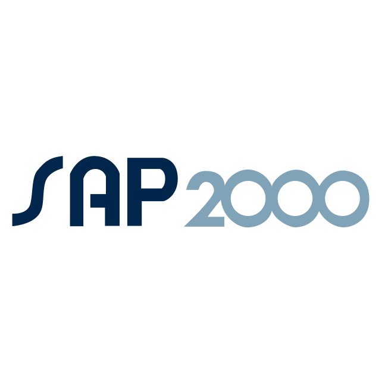

Ansys
Simulation workflows
For Windows engineering software
Compass is designed for desktop tools where real work happens through a GUI, files, scripts, or vendor automation hooks.
FreeCAD
CAD and modeling
OpenFOAM
CFD workflows

SAP2000
Structural analysis
ETABS
Building design
Use cases
Small checks, design studies, and full project workflows.
Analyze results and reports
Review simulation output, warnings, checks, and result tables, then turn them into a clear engineering report.
Prepare model setup
Handle repeated assignments, settings, load definitions, and setup checks before analysis.
Compare design options
Study alternatives in geometry, materials, member sizes, parameters, or analysis settings.
Run design optimization
Iterate on an initial geometry and evaluate changes across performance, weight, and constructability.
Guide complex software
Help engineers find commands, understand workflows, and avoid the setup mistakes that slow projects down.
Watch Compass Agent for SAP2000
Performing an end-to-end analysis for a parking steel deck frame structure.
How it works
An agent that works the loop, not just the chat.
Compass is a ReAct-style desktop agent. It runs a simple loop against your real software — and picks the right control surface for each step, not only chat about it.
01
Reason
It thinks about the goal and the current state of the model before touching anything.
02
Act
It works inside the target software — mouse, keyboard, or a repeatable script.
03
Observe
It reads what changed on screen and in the results, then continues the loop.
Vision-grounded computer use
It reads the screen through application-specific visual context, then moves the mouse and types against real controls rather than guessing from raw pixels. Learn about computer use.
Native scripting when available
For software such as SAP2000, it can call COM automation through Python comtypes — repeatable scripts for operations that should not depend on clicks.
Workflow knowledge that can be reused
Prompts, screen templates, documentation, scripts, and project conventions can be captured so the agent gets deeper for a specific tool or team.
That is the role of AgentHub: turning domain and product knowledge into specialized agents for complex desktop software.
Download Compass
The current Windows release comes preloaded with the SAP2000 agent. For other engineering software or workflows, contact us.
See GitHub ReleasesOpen the latest GitHub release to download the Windows installer.